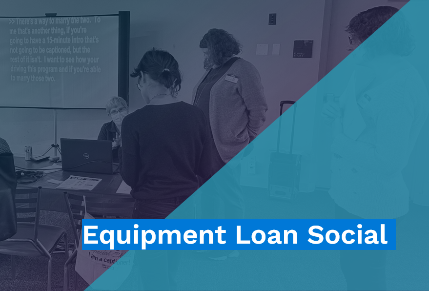

Equipment Loan Social
The Collab Social is back! Cultural Access Collaborative is dedicated to providing spaces where members of the community can meet, share, and learn together about improving accessibility in cultural spaces. For our 2026 Social, you will have the opportunity to check out Access Living’s gorgeous gallery space while learning everything there is to know about the Collab’s Equipment Loan Program.
The Equipment Loan is one of the Collab’s primary pillars as an organization. We offer captioning equipment, assistive listening devices, and audio description kits to artists and cultural organizations throughout Chicago FOR FREE! Join us on February 21st at Access Living–115 W Chicago Ave–for a hands on tour of the equipment and the chance to have snacks and drinks with other members of the Collab community. As well, we’ll be showing off our upcoming updates to the Equipment Loan system.
Join us at any time between 3:30 and 5:00! Whether you’re a frequent borrower or you’re just curious to learn more, this casual setting will encourage you to ask questions, network and engage with service providers and community members alike!
Date: Saturday, February 21st
Time: 3:30pm – 5:00pm CT
Location: Access Living 115 W Chicago Ave, Chicago, IL 60654
Program Accessibility: American Sign Language Interpretation and Assistive Listening Devices will be provided. The event does not include a formal presentation, so captions will not be included. Please complete the accommodation request field found in the event registration form or call (312) 788-8705 to request other access services.
Cost: FREE. While this program is free, a $5 suggested donation helps to cover programming costs to ensure Cultural Access Collaborative’s mission is achievable and accessible to all. You may make a tax deductible online donation to the Collab at any time.